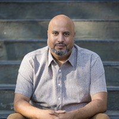
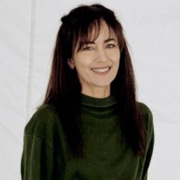

NPR
54 people whose festival biography mentions NPR. A mention can mean a job, a past job, a grant, a broadcast or an award: read the bio for which.

 Susanne ReberFestival team, panelist, workshop leader · 4 editions, 2018–2022E. W. Scripps Washington Bureau
Susanne ReberFestival team, panelist, workshop leader · 4 editions, 2018–2022E. W. Scripps Washington Bureau Steve SapienzaPanelist · 4 editions, 2017–2025
Steve SapienzaPanelist · 4 editions, 2017–2025 Michael RezendesPanelist, moderator, workshop leader · 3 editions, 2015–2023
Michael RezendesPanelist, moderator, workshop leader · 3 editions, 2015–2023
- Assia BoundaouiPanelist, filmmaker · 2 editions, 2017–2018


- Lauren SelmanFestival team · 2 editions, 2015–2016

- Lisa ArmstrongModerator · 2016
 Jimmie Briggs2023
Jimmie Briggs2023 Farai ChideyaPanelist · 2021
Farai ChideyaPanelist · 2021 Costas ChristPanelist, journalists behind the film · 2025
Costas ChristPanelist, journalists behind the film · 2025
- Luisa ConlonFilmmaker · 2018
- Chris FentonPanelist · 2020
 Roopa GogineniFilmmaker, panelist · 2023
Roopa GogineniFilmmaker, panelist · 2023 David E. GuggenheimModerator · 2025
David E. GuggenheimModerator · 2025 Nathan HalversonFilm subject, panelist · 2022
Nathan HalversonFilm subject, panelist · 2022 Quincy LedbetterPanelist · 2021
Quincy LedbetterPanelist · 2021 Sally LehrmanPanelist · 2024
Sally LehrmanPanelist · 2024- Robert MaguirePanelist · 2018
- Doyle McManusPanelist · 2018
 Regan MertzFestival team · 2022
Regan MertzFestival team · 2022 Arionne Nettles2021
Arionne Nettles2021- Maggie Penman2026
- Sacha PfeifferPanelist · 2015

Michael PremoFilmmaker, panelist · 2024
 Claudio Sanchez2021
Claudio Sanchez2021
 Charles M. SennottPanelist · 2021
Charles M. SennottPanelist · 2021- Shannon ServicePanelist, filmmaker · 2018
 Caroline SuhFilmmaker · 2023
Caroline SuhFilmmaker · 2023